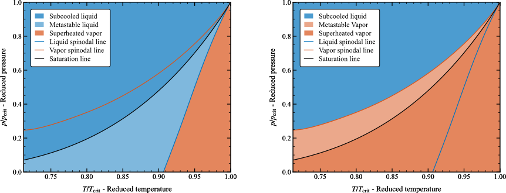

thermopt.properties.core_calculations module#
- thermopt.properties.core_calculations.blend_properties(phase_change, props_equilibrium, props_metastable, blending_variable, blending_onset, blending_width)[source]#
Calculate blending between equilibrum and metastable fluid properties
- Parameters:
- phase_changestr
The type of phase change (e.g., ‘condensation’, ‘evaporation’, ‘flashing’, ‘cavitation’). Cavitation, flashing, and evaporation do the same calculations, they are aliases added for convenience.
- props_equilibriumdict
The equilibrium properties.
- props_metastabledict
The metastable properties.
- blending_variablestr
The variable used for blending.
- blending_onsetfloat
The onset value for blending.
- blending_widthfloat
The width value for blending.
- Returns:
- dict
Blended thermodynamic properties.
- thermopt.properties.core_calculations.calculate_generalized_quality(abstract_state, alpha=10)[source]#
Calculate the generalized quality of a fluid, extending the quality calculation beyond the two-phase region if necessary.
Below the critical temperature, the quality is calculated from the specific volume of the saturated liquid and vapor states. Above the critical temperature, an artificial two-phase region is defined around the critical density line to allow for a finite-width quality computation.
The quality, \(Q\), is given by:
\[Q = \frac{v - v(T, Q=0)}{v(T, Q=1) - v(T, Q=0)}\]where \(v=1/\rho\) is the specific volume and \(T\) is the temperature.
Additionally, this function applies smoothing limiters to ensure the quality is bounded between -1 and 2. These limiters prevent the quality value from taking arbitrarily large values, enhancing stability and robustness of downstream calculation. The limiters use the logsumexp method for smooth transitions, with a specified alpha value controlling the smoothness.
- Parameters:
- abstract_stateCoolProp.AbstractState
CoolProp abstract state of the fluid.
- alphafloat
Smoothing factor of the quality-calculation limiters.
- Returns:
- float
The calculated quality of the fluid.
- thermopt.properties.core_calculations.calculate_mixture_properties(props_1, props_2, y_1, y_2)[source]#
Calculate the thermodynamic properties of the mixture.
TODO: add model equations and explanation
- Parameters:
- state_1dict
Thermodynamic properties of fluid 1.
- state_2dict
Thermodynamic properties of fluid 2.
- y_1float
Mass fraction of fluid 1.
- y_2float
Mass fraction of fluid 2.
- Returns:
- mixture_propertiesdict
A dictionary containing the mixture’s properties.
- thermopt.properties.core_calculations.calculate_subcooling(abstract_state)[source]#
Calculate the degree of subcooling for a given CoolProp abstract state.
This function computes the subcooling of a fluid using the CoolProp library’s abstract state class. It handles both subcritical and supercritical conditions to provide a measure of subcooling for any thermodynamic state. This results in a continuous variation of subcooling in the two-phase region, which is necessary to achieve reliable convergence of systems of equations and optimization problems involving the degree of subcooling.
- Calculation cases:
Physically meaningful subcooling for subcritical states in the liquid region:
\[\Delta T = T(p, Q=0) - T \quad \text{for} \quad h < h(p, Q=0)\]Artificial subcooling for subcritical states in the vapor and two-phase regions:
\[\Delta T = \frac{h(p, Q=0) - h}{c_p(p, Q=0)}\]Artificial subcooling for supercritical states defined using the critical density line:
\[\Delta T = T(p, \rho_{\text{crit}}) - T\]
- Parameters:
- abstract_stateCoolProp.AbstractState
The abstract state of the fluid for which the subcooling is to be calculated.
- Returns:
- float
The degree of subcooling in Kelvin.
Examples
>>> import CoolProp as CP >>> abstract_state = CP.AbstractState("HEOS", "water") >>> abstract_state.update(CP.PT_INPUTS, 101325, 25+273.15) >>> subcooling = bpy.calculate_subcooling(abstract_state) >>> print(f"Subcooling is {subcooling:+0.3f} K") Subcooling is +74.974 K
>>> abstract_state = CP.AbstractState("HEOS", "water") >>> abstract_state.update(CP.PQ_INPUTS, 101325, 0.05) >>> subcooling = bpy.calculate_subcooling(abstract_state) >>> print(f"Subcooling is {subcooling:+0.3f} K") Subcooling is -26.763 K
- thermopt.properties.core_calculations.calculate_superheating(abstract_state)[source]#
Calculate the degree of superheating for a given CoolProp abstract state.
This function computes the superheating of a fluid using the CoolProp library’s abstract state class. It handles both subcritical and supercritical conditions to provide a measure of superheating for any thermodynamic state. This results in a continuous variation of superheating in the two-phase region, which is necessary to achieve in reliable convergence of systems of equations and optimization problems involving the degree of superheating.
- Calculation cases:
Physically meaningful superheating for subcritical states in the vapor region:
\[\Delta T = T - T(p, Q=1) \quad \text{for} \quad h > h(p, Q=1)\]Artificial superheating for subcritical states in the liquid and two-phase regions:
\[\Delta T = \frac{h - h(p, Q=1)}{c_p(p, Q=1)}\]Artificial superheating for supercritical states defined using the critical density line:
\[\Delta T = T - T(p, \rho_{\text{crit}})\]
- Parameters:
- abstract_stateCoolProp.AbstractState
The abstract state of the fluid for which the superheating is to be calculated.
- Returns:
- float
The degree of superheating in Kelvin.
Examples
>>> import CoolProp as CP >>> abstract_state = CP.AbstractState("HEOS", "water") >>> abstract_state.update(CP.PT_INPUTS, 101325, 120 + 273.15) >>> superheating = calculate_superheating(abstract_state) >>> print(f"Superheating is {superheating:+0.3f} K") Superheating is +20.026 K
>>> abstract_state = CP.AbstractState("HEOS", "water") >>> abstract_state.update(CP.PQ_INPUTS, 101325, 0.95) >>> superheating = calculate_superheating(abstract_state) >>> print(f"Superheating is {superheating:+0.3f} K") Superheating is -54.244 K
- thermopt.properties.core_calculations.calculate_supersaturation(abstract_state, props)[source]#
Evaluate degree of supersaturation and supersaturation ratio.
The supersaturation degree is defined as the actual temperature minus the saturation temperature at the corresponding pressure:
\[\Delta T = T - T_{\text{sat}}(p)\]The supersaturation ratio is defined as the actual pressure divided by the saturation pressure at the corresponding temperature:
\[S = \frac{p}{p_{\text{sat}}(T)}\]The metastable liquid and metastable vapor regions are illustrated in the pressure-temperature diagram. In the metastable liquid region, \(\Delta T > 0\) and \(S < 1\), indicating that the liquid temperature is higher than the equilibrium temperature and will tend to evaporate. Conversely, in the metastable vapor region, \(\Delta T < 0\) and \(S > 1\), indicating that the vapor temperature is lower than the equilibrium temperature and will tend to condense.
Note
Supersaturation properties are only computed for subcritical pressures and temperatures. If the fluid is in the supercritical region, the function will return NaN for the supersaturation properties.
- Parameters:
- abstract_stateCoolProp.AbstractState
The abstract state of the fluid for which the properties are to be calculated.
- propsdict
Dictionary to store the computed properties.
- Returns:
- dict
Thermodynamic properties including supersaturation properties
- thermopt.properties.core_calculations.compute_properties(abstract_state, prop_1, prop_1_value, prop_2, prop_2_value, calculation_type, rhoT_guess_metastable=None, rhoT_guess_equilibrium=None, phase_change=None, blending_variable=None, blending_onset=None, blending_width=None, supersaturation=False, generalize_quality=False, solver_algorithm='hybr', solver_tolerance=1e-06, solver_max_iterations=100, print_convergence=False)[source]#
Determine the thermodynamic state for the given fluid property pair by iterating on the density-temperature native inputs,
This function uses a non-linear root finder to determine the solution of the nonlinear system given by:
\[\begin{split}R_1(\rho,\, T) = y_1 - y_1(\rho,\, T) = 0 \\ R_2(\rho,\, T) = y_2 - y_2(\rho,\, T) = 0\end{split}\]where \((y_1,\, y_2)\) is the given thermodynamic property pair (e.g., enthalpy and pressure), while density and temperature \((\rho,\, T)\) are the independent variables that the solver iterates until the residual of the problem is driven to zero.
TODO The calculations \(y_1(\rho,\, T)\) and \(y_1(\rho,\, T)\) are performed by [dependns on input]
equilibrium calculations (coolprop) evaluating the Helmholtz energy equation of state. blending of both
- Parameters:
- prop_1str
The the type of the first thermodynamic property.
- prop_1_valuefloat
The the numerical value of the first thermodynamic property.
- prop_2str
The the type of the second thermodynamic property.
- prop_2_valuefloat
The the numerical value of the second thermodynamic property.
- rho_guessfloat
Initial guess for density
- T_guessfloat
Initial guess for temperature
- calculation_typestr
The type of calculation to perform. Valid options are ‘equilibrium’, ‘metastable’, and ‘blending’.
- supersaturationbool, optional
If True, calculates supersaturation variables. Defaults to False.
- generalize_qualitybool, optional
If True, generalizes quality outside two-phase region. Defaults to False.
- blending_variablestr, optional
The variable used for blending properties. Required if calculation_type is ‘blending’.
- blending_onsetfloat, optional
The onset value for blending. Required if calculation_type is ‘blending’.
- blending_widthfloat, optional
The width value for blending. Required if calculation_type is ‘blending’.
- solver_algorithmstr, optional
Method to be used for solving the nonlinear system. Defaults to ‘hybr’.
- solver_tolerancefloat, optional
Tolerance for the solver termination. Defaults to 1e-6.
- solver_max_iterationsinteger, optional
Maximum number of iterations of the solver. Defaults to 100.
- print_convergencebool, optional
If True, displays the convergence progress. Defaults to False.
- Returns:
- dict
Thermodynamic properties corresponding to the given input pair.
- thermopt.properties.core_calculations.compute_properties_1phase(abstract_state, generalize_quality=False, supersaturation=False)[source]#
Extract single-phase properties from CoolProp abstract state
- thermopt.properties.core_calculations.compute_properties_2phase(abstract_state, supersaturation=False)[source]#
Compute two-phase fluid properties from CoolProp abstract state
Get two-phase properties from mixing rules and single-phase CoolProp properties
Homogeneous equilibrium model
State formulas for T=T, p=p, mfrac/vfrac(rho), h-s-g-u-cp-cv, mu-k, a
- thermopt.properties.core_calculations.compute_properties_coolprop(abstract_state, input_type, prop_1, prop_2, generalize_quality=False, supersaturation=False)[source]#
Set the thermodynamic state of the fluid based on input properties.
This method updates the thermodynamic state of the fluid in the CoolProp
abstractstateobject using the given input properties. It then calculates either single-phase or two-phase properties based on the current phase of the fluid.If the calculation of properties fails, converged_flag is set to False, indicating an issue with the property calculation. Otherwise, it’s set to True.
Aliases of the properties are also added to the
Fluid.propertiesdictionary for convenience.- Parameters:
- input_typeint
The variable pair used to define the thermodynamic state. This should be one of the predefined input pairs in CoolProp, such as
PT_INPUTSfor pressure and temperature.The valid options for the argument ‘input_type’ are summarized below.
Input pair name
Input pair mapping
QT_INPUTS
1
PQ_INPUTS
2
QSmolar_INPUTS
3
QSmass_INPUTS
4
HmolarQ_INPUTS
5
HmassQ_INPUTS
6
DmolarQ_INPUTS
7
DmassQ_INPUTS
8
PT_INPUTS
9
DmassT_INPUTS
10
DmolarT_INPUTS
11
HmolarT_INPUTS
12
HmassT_INPUTS
13
SmolarT_INPUTS
14
SmassT_INPUTS
15
TUmolar_INPUTS
16
TUmass_INPUTS
17
DmassP_INPUTS
18
DmolarP_INPUTS
19
HmassP_INPUTS
20
HmolarP_INPUTS
21
PSmass_INPUTS
22
PSmolar_INPUTS
23
PUmass_INPUTS
24
PUmolar_INPUTS
25
HmassSmass_INPUTS
26
HmolarSmolar_INPUTS
27
SmassUmass_INPUTS
28
SmolarUmolar_INPUTS
29
DmassHmass_INPUTS
30
DmolarHmolar_INPUTS
31
DmassSmass_INPUTS
32
DmolarSmolar_INPUTS
33
DmassUmass_INPUTS
34
DmolarUmolar_INPUTS
35
- prop_1float
The first property value corresponding to the input type.
- prop_2float
The second property value corresponding to the input type.
- Returns:
- dict
A dictionary object containing the fluid properties
- thermopt.properties.core_calculations.compute_properties_metastable_rhoT(abstract_state, rho, T, supersaturation=False, generalize_quality=False)[source]#
Compute the thermodynamic properties of a fluid using temperature-density calls to the Helmholtz energy equation of state (HEOS).
- Parameters:
- abstract_stateCoolProp.AbstractState
The abstract state of the fluid for which the properties are to be calculated.
- rhofloat
Density of the fluid (kg/m³).
- Tfloat
Temperature of the fluid (K).
- supersaturationbool, optional
Whether to evaluate supersaturation properties. Default is False.
- Returns:
- dict
Thermodynamic properties computed at the given density and temperature.
Notes
The Helmholtz energy equation of state (HEOS) expresses the Helmholtz energy as an explicit function of temperature and density:
\[\Phi = \Phi(\rho, T)\]In dimensionless form, the Helmholtz energy is given by:
\[\phi(\delta, \tau) = \frac{\Phi(\delta, \tau)}{R T}\]where:
\(\phi\) is the dimensionless Helmholtz energy
\(R\) is the gas constant of the fluid
\(\delta = \rho / \rho_c\) is the reduced density
\(\tau = T_c / T\) is the inverse of the reduced temperature
Thermodynamic properties can be derived from the Helmholtz energy and its partial derivatives. The following table summarizes the expressions for various properties:
Helmholtz energy thermodynamic relations# Property name
Mathematical relation
Pressure
\[Z = \frac{p}{\rho R T} = \delta \cdot \phi_{\delta}\]Entropy
\[\frac{s}{R} = \tau \cdot \phi_{\tau} - \phi\]Internal energy
\[\frac{u}{R T} = \tau \cdot \phi_{\tau}\]Enthalpy
\[\frac{h}{R T} = \tau \cdot \phi_{\tau} + \delta \cdot \phi_{\delta}\]Isochoric heat capacity
\[\frac{c_v}{R} = -\tau^2 \cdot \phi_{\tau \tau}\]Isobaric heat capacity
\[\frac{c_p}{R} = -\tau^2 \cdot \phi_{\tau \tau} + \frac{(\delta \cdot \phi_{\delta} - \tau \cdot \delta \cdot \phi_{\tau \delta})^2}{2 \cdot \delta \cdot \phi_{\delta} + \delta^2 \cdot \phi_{\delta \delta}}\]Isobaric expansivity
\[\alpha \cdot T = \frac{\delta \cdot \phi_{\delta} - \tau \cdot \delta \cdot \phi_{\tau \delta}}{2 \cdot \delta \cdot \phi_{\delta} + \delta^2 \cdot \phi_{\delta \delta}}\]Isothermal compressibility
\[\rho R T \beta = \left(2 \cdot \delta \cdot \phi_{\delta} + \delta^2 \cdot \phi_{\delta \delta} \right)^{-1}\]Isothermal bulk modulus
\[\frac{K_T}{\rho R T} = 2 \cdot \delta \cdot \phi_{\delta} + \delta^2 \cdot \phi_{\delta \delta}\]Isentropic bulk modulus
\[\frac{K_s}{\rho R T} = 2 \cdot \delta \cdot \phi_{\delta} + \delta^2 \ \cdot \phi_{\delta \delta} - \frac{(\delta \cdot \phi_{\delta} - \tau \cdot \delta \cdot \phi_{\tau \delta})^2}{\tau^2 \cdot \phi_{\tau \tau}}\]Joule-Thompson coefficient
\[\rho R \mu_{\mathrm{JT}} = - \frac{\delta \cdot \phi_{\delta} + \tau \cdot \delta \cdot \phi_{\tau \delta} + \delta^2 \cdot \phi_{\delta \delta}}{(\delta \cdot \phi_{\delta} - \tau \cdot \delta \cdot \phi_{\tau \delta})^2 - \tau^2 \cdot \phi_{\tau \tau} \cdot (2 \cdot \delta \cdot \phi_{\delta} + \delta^2 \cdot \phi_{\delta \delta})}\]Where the following abbreviations are used:
\(\phi_{\delta} = \left(\frac{\partial \phi}{\partial \delta}\right)_{\tau}\)
\(\phi_{\tau} = \left(\frac{\partial \phi}{\partial \tau}\right)_{\delta}\)
\(\phi_{\delta \delta} = \left(\frac{\partial^2 \phi}{\partial \delta^2}\right)_{\tau, \tau}\)
\(\phi_{\tau \tau} = \left(\frac{\partial^2 \phi}{\partial \tau^2}\right)_{\delta, \delta}\)
\(\phi_{\tau \delta} = \left(\frac{\partial^2 \phi}{\partial \tau \delta}\right)_{\delta, \tau}\)
This function can be used to estimate metastable properties using the equation of state beyond the saturation lines.